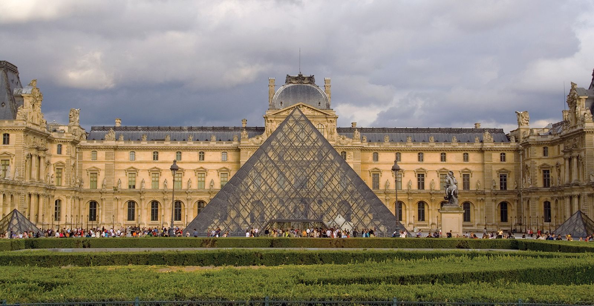

The Most top five Best Places In The france
Effeil Tower

Location: Paris.
Best Time to Visit: April-June or September-November.
Info:: An iconic landmark offering stunning views of Paris and a symbol of French culture.
Louvre-Museum

Location: Paris.
Best Time to Visit: April-June or September-November.
Info:: The world’s largest art museum, home to masterpieces like the Mona Lisa and Venus de Milo.
Palace Of Versatiles

Location: Versailles, near Paris.
Best Time to Visit: April-June or September-November.
Info:: A stunning royal residence featuring opulent architecture and vast gardens.
French-Riviera

Location: Southeastern France.
Best Time to Visit: May-September.
Info:: Known for glamorous beaches, charming towns, and the Cannes Film Festival.
Mont Saint Michel

Location: Normandy.
Best Time to Visit: April-October.
Info:: A medieval abbey perched on a rocky island, surrounded by tidal waters.